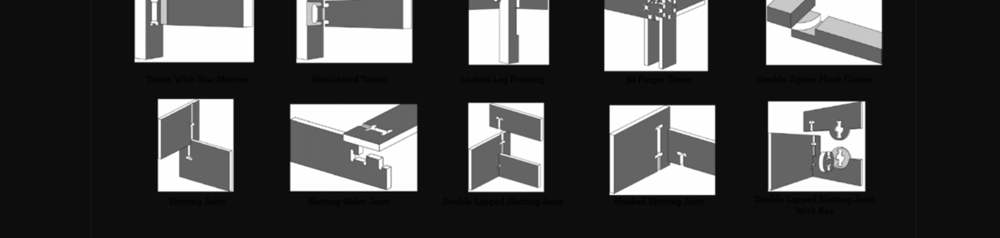
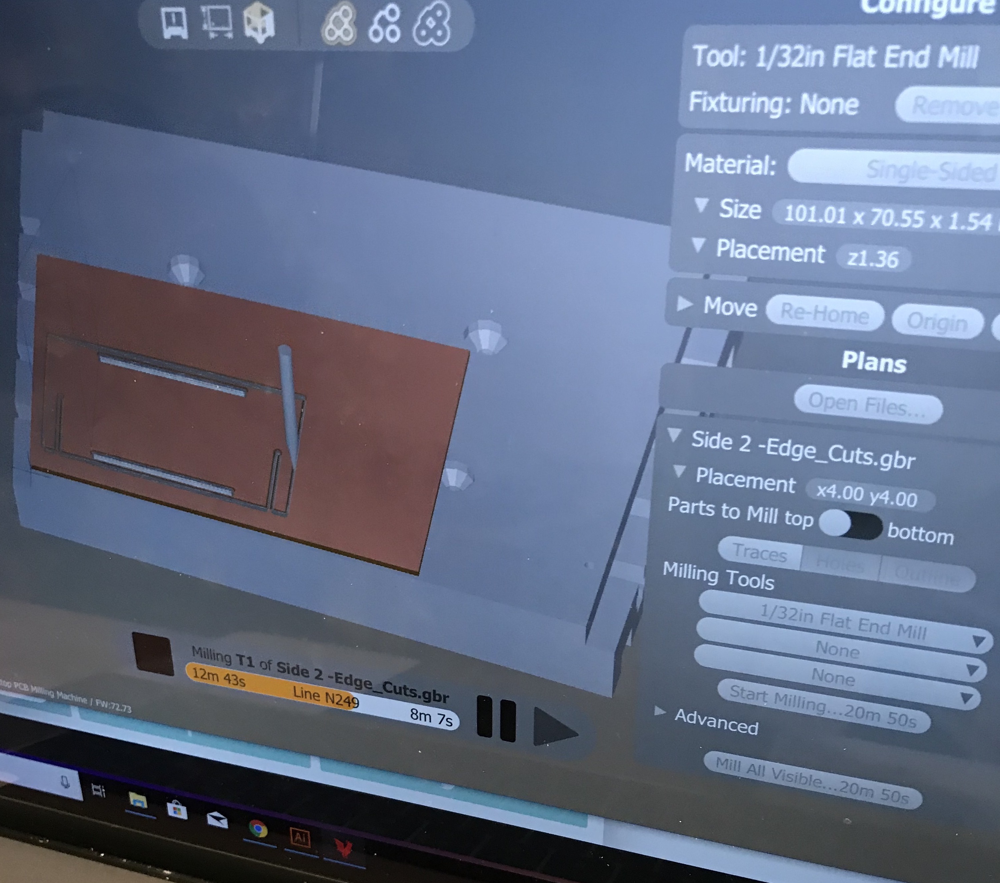
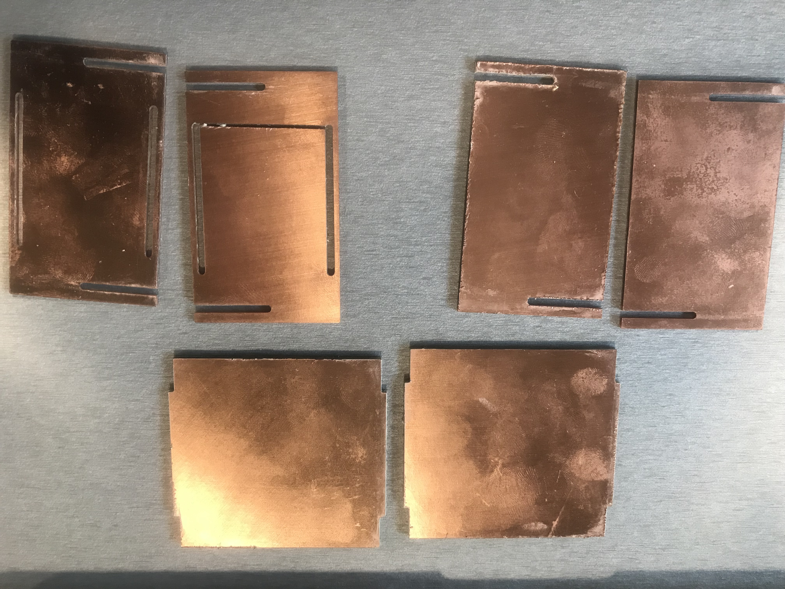
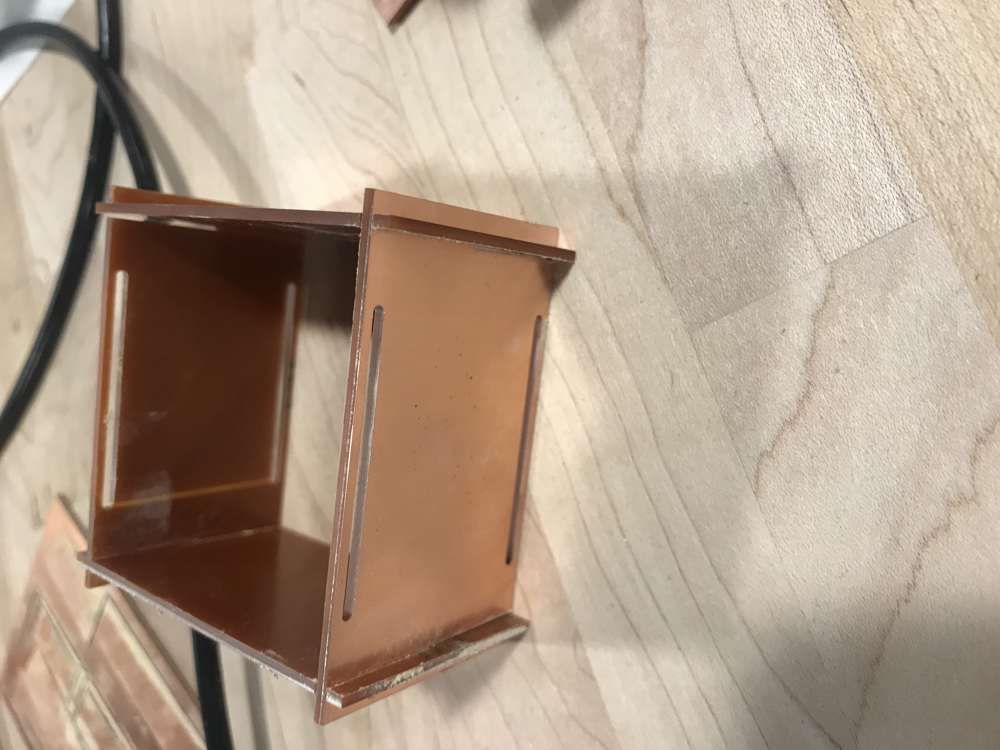

A5: CNC Milling - Box with slotting joints

Source Files: Onshape
Design Process
Looking at the Nadia's suggestion on on Wood joinery. I looked at slot joints in particular and though I might be able to recreate a FR1 version of it. I wanted to make something simple yet effective. Looking furthermore into slot joints, I decided to design a slot joint box press fit.

I started by sketching
Then I extruded the parts. Now for my top and botton as well as front and back parts were same. Once I created one of each Joshua showed me how mirrow the parts using plane. It was really helpful as using OnShape was stressful. So mirrored my parts and then extruded the rest of the parts.
Printing Process
After finishing design in Onshape, I exported the DXF files of all the parts. After that, I got to know that width of each FR1 at that point I had to go redo my a bit widths. After that I gain downloaded them into DXF and then I found 4 almost same widhts FR1's so I dont have keep changing. Then I used KiCAD as suggested to convret my files to .gbr for printing for the milling machine.
When using KiCAD I converted all the parts from inches to mm.


After the getting into the print. All the parts are below :

Moving Parts Demo
Voila! Finally got the box together!


Acknowledgement
Shoutout to Josh, Lucas and Megha for help and advice! All of them were such a great help. Wouldn't have been able to accomplish without them.